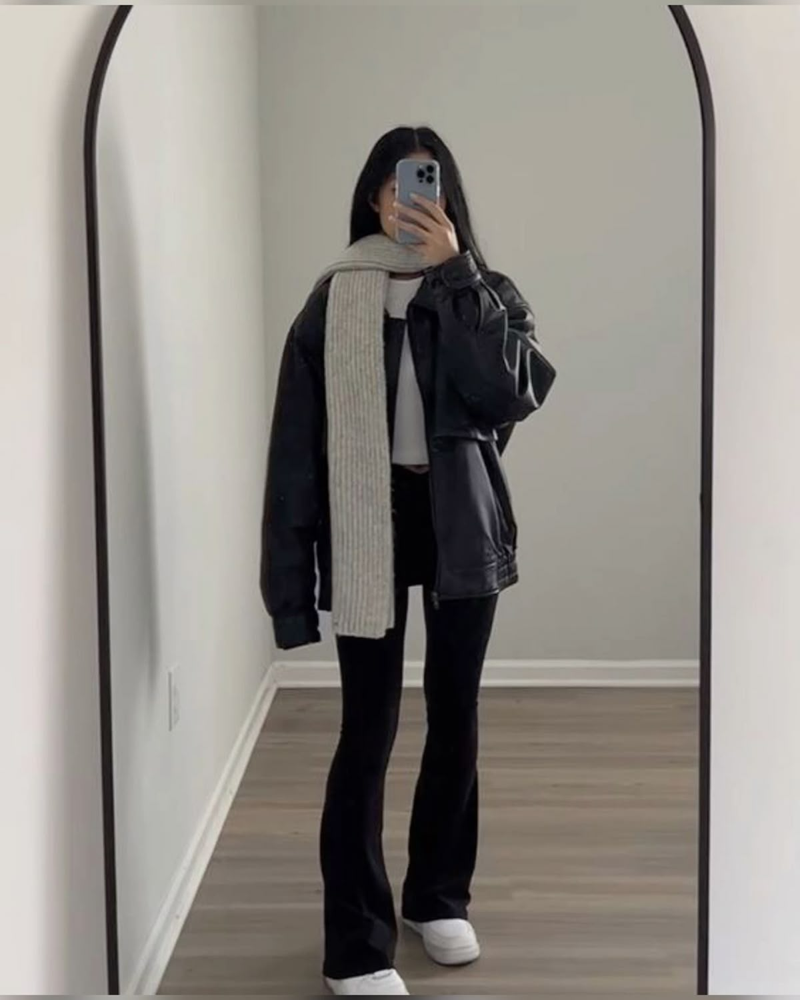
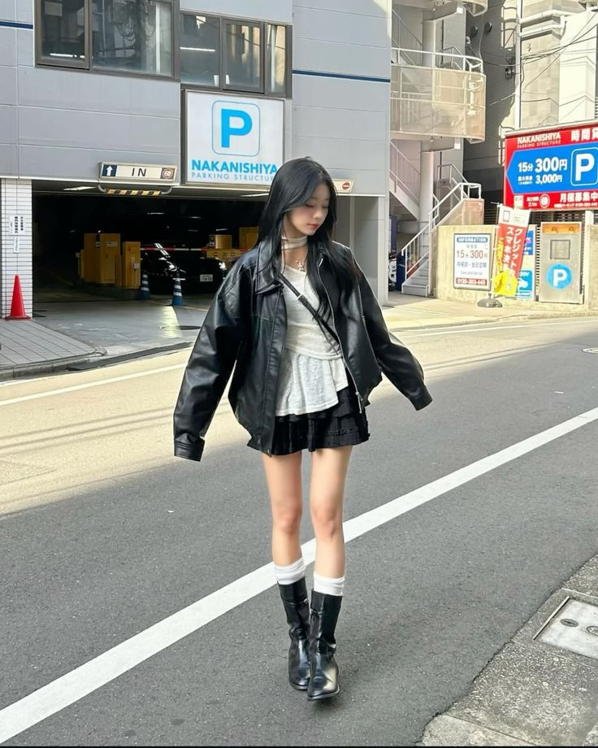
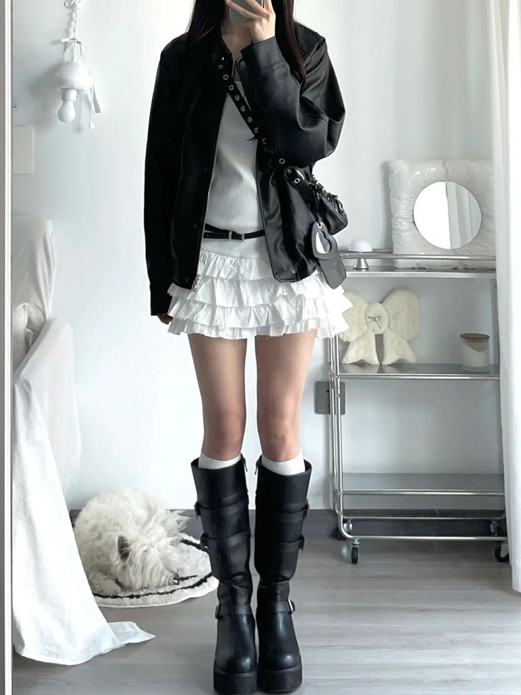

Feminine Y2K
A layered corset-style top with a mini skirt creates a delicate yet trendy Y2K-inspired look, combining soft feminine details with a slightly edgy silhouette.

Soft Girly Layering

Layered Street Girl

Clean Contrast Layers